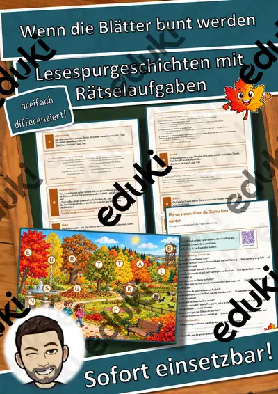

Polarlichter – wenn der Himmel grün leuchtet – Lesespurgeschichte mit Rätselaufgaben (Klasse 8)
Polarlichter – wenn der Himmel grün leuchtet – Lesespurgeschichte Physik (Klasse 8)Schick deine Klasse auf eine Lesespur durch eine Volkssternwarte an einem Januarabend! Ich-Erzähler Mehmet ist skeptisch, Mitschülerin Jana fotografiert begeistert, und Physiklehrer Herr Brandl erklärt – Maskottchen ist der Stabmagnet Magnus. Von der Eingangshalle über Sonnenmodell, Magnetversuch, Kompasstisch, Erdglobus, Leuchtröhren, Fotowand und Satellitenmodell bis auf die Dachterrasse führt der Weg. Am Ende jedes Abschnitts verrät ein Hinweis den nächsten Ort auf dem Plan – nur wer genau liest, findet den Weg und sammelt alle geheimen Buchstaben zum Lösungswort.
Die passende Lesespur für Physik in Klasse 8 (auch 7 und 9) – ideal zu Magnetismus, Erdmagnetfeld und Sonne, für Stationenlernen oder Vertretungsstunden. Ohne Marken. Geeignet für Mittelschule, Realschule, Gymnasium und Gesamtschule. Das Material ist SOFORT EINSETZBAR und in DREI DIFFERENZIERUNGSSTUFEN (leicht ★ / mittel ★★ / schwer ★★★) angelegt.WICHTIG: Das komplette Material ist sowohl in FARBE als auch in SCHWARZ-WEISS enthalten – ideal zum Sparen von Druckkosten.DAS IST ENTHALTEN
- Lesespurgeschichte in 3 Niveaus (leicht, mittel, schwer)
- farbiger Plan der Sternwarte als Suchkarte
- Hörverstehen mit QR-Code zur MP3 (selbstständiges Hören mit Kopfhörern)
- vier Aufträge auf dem Weg: eine Rechenaufgabe am Sonnenmodell, eine Zuordnung, ein Quiz und ein Steckbrief
- Rätselseite (Wörter-Suchsel + Rätselfragen rund um die Polarlichter)
- Ausmalbild zum Thema
- ausführliches Lösungsblatt für die Lehrkraft mit allen Lösungen (Lesespur, Aufträge, Hörverstehen, Rätselseite)
- alles zusätzlich als komplette Schwarz-Weiß-VarianteSO GEHT DIE LESESPURDie Schülerinnen und Schüler lesen ab START, finden im Text den nächsten Ort, suchen ihn auf dem Plan und lesen bei dieser Station weiter. An jeder richtigen Station gibt es einen Buchstaben. Eingeplante Sackgassen (Cafeteria, Garderobe, Vortragssaal, Aufzug) sind keine Stationen und dienen der Selbstkontrolle. Am Ende werden die gesammelten Buchstaben umgestellt und ergeben ein geheimes Lösungswort. (Die Lösungen sind selbstverständlich nur im Lösungsblatt für die Lehrkraft enthalten.)INHALTLICHER SCHWERPUNKTSonnenwind aus geladenen Teilchen und Sonnenausbrüche, Feldlinien eines Stabmagneten, Kompass im Erdmagnetfeld, Schutzwirkung des Magnetfelds, Polarlicht-Ring um die Pole, Anregung von Sauerstoff und Stickstoff mit ihren Leuchtfarben, Polarlichter über Deutschland, Fotografie mit langer Belichtung, Weltraumwetter-Warnungen.ABGEDECKTER LEHRPLAN (Klasse 8)
- Physik – Magnetismus: Magnetfeld, Feldlinien, Erdmagnetfeld; Astronomie: Sonne und Sonnenwind (LehrplanPLUS Bayern Physik 8).
- Mathematik – Zeitspannen und Geschwindigkeiten berechnen.
- Deutsch – Sachtexte sinnentnehmend lesen; einem Hörtext gezielt Informationen entnehmen (Hörverstehen mit MP3).Geeignet für Freiarbeit, Stationenlernen, Vertretungsstunden, Wochenplan und als Einstieg ins Thema.
Ähnliche Materialien

Polarlicht Lückentext mit Wortspeicher Hörverstehen und Suchsel

Materialpaket Winter und Advent für die 8. Klasse: 10 Lesespurgeschichten mit Rätselaufgaben fächerübergreifend (Polarlichter, Streusalz, Krippenbau & mehr)

Wenn die Blätter bunt werden – Lesespurgeschichte mit Rätselaufgaben (Klasse 3)

Himmel Lückentext mit Wortspeicher Hörverstehen und Suchsel

Bundestagswahl - Wahlprogramm Bündnis 90 - Die Grünen

Himmel und Hölle: In der Stadt – Himmel und Hölle – Klasse 1–4

Himmel und Hölle: Familie – Himmel und Hölle – Klasse 1–4